Extracción de metadatos GPS para geolocalización · Informática Criminológica
ACTIVIDAD
Actividad 15
ALUMNO
Aaron Emanuel González Díaz (182447)
ASIGNATURA
Informática Criminológica
DOCENTE
Mtro. Servando López Contreras
1. Objetivo
Analizar los metadatos de dos ficheros de origen distinto —un documento ofimático de INTERPOL y una
fotografía capturada con un dispositivo móvil— utilizando ExifTool, para demostrar
cómo esta clase de datos ocultos puede usarse como evidencia digital: identificar autoría, software
de edición, historial de cambios y, en el caso de una imagen, la ubicación GPS exacta donde fue
tomada.
2. Muestras Analizadas
WOA database application form.docx
Formulario de aplicación de INTERPOL (Works of Art database). Metadatos de documento Office.
XiaomiMiA2Lite.jpg
Fotografía capturada con un Xiaomi Mi A2 Lite. Metadatos EXIF y GPS.
3. Parte I — Documento de INTERPOL
Utilicé ExifTool y respondí conforme al análisis de metadatos del archivo de origen.
Figura 1. Comando ExifTool ejecutado sobre el archivo WOA database application form.docx.
1.¿Cómo categorizó el archivo INTERPOL?
El campo InterpolClassification está establecido como “Unclassified”.
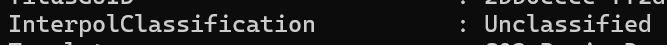
Figura 2. Campo InterpolClassification: Unclassified — categoría asignada al archivo.
2.¿Qué template fue utilizado para la elaboración del archivo por parte de INTERPOL?
Se utilizó la plantilla “G03 Basic Doc SP.dotx” (campo Template).
Figura 3. Campo Template: G03 Basic Doc SP.dotx — plantilla utilizada en su elaboración.
3.¿Cuál fue el tiempo total de edición del fichero?
Los metadatos de fecha/hora del archivo (campo Total Editing Time / File Modification Date) ubican el tiempo total de edición reportado por ExifTool en 45 minutos.
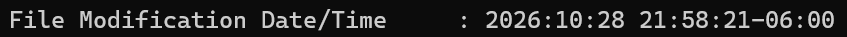
Figura 4. Metadatos de fecha/hora del archivo utilizados para calcular el tiempo total de edición.
4.Identifique la Compañía propietaria del fichero.
OIPC - INTERPOL (campo Company; OIPC: Organisation Internationale de Police Criminelle, nombre oficial en francés de INTERPOL).
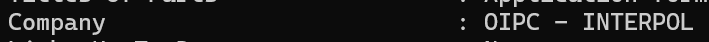
Figura 5. Campo Company: OIPC - INTERPOL — compañía propietaria del fichero.
5.¿Quién realizó la última modificación del fichero?
Carolyn Lejeune (campo Last Modified By / Revisado por).
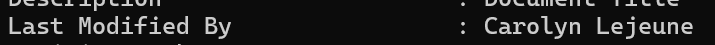
Figura 6. Campo Last Modified By: Carolyn Lejeune — autora de la última modificación.
6.¿Cuál fue la fecha de creación del fichero en investigación?
3 de mayo de 2019, 15:35 UTC (2019:05:03 15:35:00Z, campo Create Date).
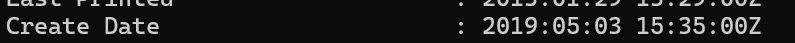
Figura 7. Campo Create Date: 2019:05:03 15:35:00Z — fecha de creación del archivo.
7.De acuerdo al análisis de metadatos del fichero de INTERPOL, identifique el creador del mismo.
Carolyn Lejeune (campo Creator / Author).
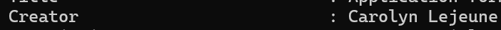
Figura 8. Campo Creator: Carolyn Lejeune — creadora/autora del documento.
4. Parte II — Fotografía XiaomiMiA2Lite.jpg
Figura 9. Comando ExifTool ejecutado sobre la fotografía XiaomiMiA2Lite.jpg.
1.¿Cuál fue la apertura ISO utilizada?
ISO 100 (ISO Speed Ratings).
Figura 10. Campo ISO: 100 — sensibilidad ISO utilizada en la captura.
2.¿Cuál es la longitud focal de la cámara con la que fue capturada la imagen?
3.8 mm (longitud focal real; equivalente a 26 mm en formato de película de 35 mm).
Figura 11. Campo Focal Length: 3.8 mm — longitud focal de la cámara.
3.¿Señale si se utilizó la captura con Flash para obtener la imagen?
No. El campo Flash muestra “Off, Did not fire”: el flash no se disparó.
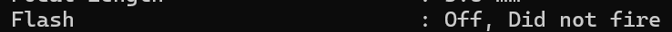
Figura 12. Campo Flash: Off, Did not fire — el flash no se disparó.
4.Señale la fecha de creación del archivo.
28 de mayo de 2020, 18:11:41 (Create Date / Date Time Original). El campo File Creation Date/Time del sistema de archivos marca 2020:12:27 08:20:12-06:00.
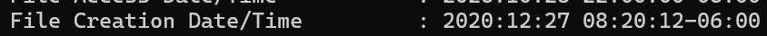
Figura 13. Campo File Creation Date/Time: 2020:12:27 08:20:12-06:00.
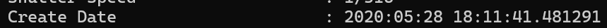
Figura 14. Campo Create Date: 2020:05:28 18:11:41 — fecha y hora originales de la captura.
5.Identifique los datos de ubicación GPS y señale el lugar exacto dónde la fotografía fue tomada.
Coordenadas: 51°15'12.99" N, 0°32'21.93" W, equivalentes a 51.2536096666667, -0.539425611111111 en formato decimal. El punto se ubica en el condado de Surrey, Inglaterra (Reino Unido), en las inmediaciones de Guildford.
Ubicación en el mapa: https://www.google.com/maps?q=51.2536096666667,-0.539425611111111
Figura 15. Campo GPS Position en formato DMS: 51°15'12.99" N, 0°32'21.93" W.
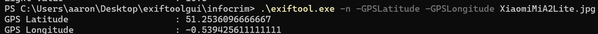
Figura 16. Coordenadas GPS en formato decimal (comando con la opción -n): 51.2536096666667, -0.539425611111111.
6.Elimine todos los metadatos de la muestra que se analiza.
Se generó una copia de la imagen (XiaomiMiA2Lite_Limpio.jpg) con el comando exiftool -all= XiaomiMiA2Lite.jpg -o XiaomiMiA2Lite_Limpio.jpg. Al reanalizar el archivo resultante, ExifTool no devuelve ningún campo EXIF (sin cámara, sin fecha de captura y sin coordenadas GPS), confirmando que la limpieza fue completa.
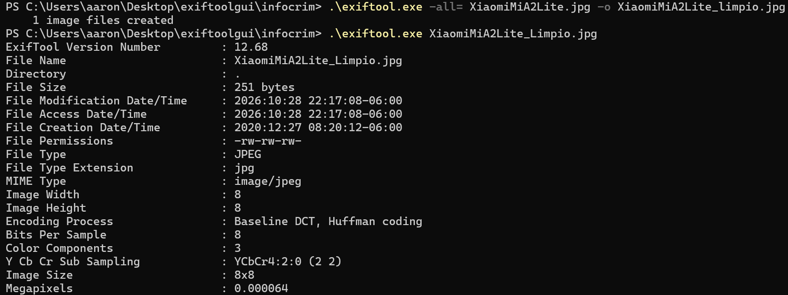
Figura 17. Eliminación de metadatos con -all= y verificación: el archivo resultante no contiene campos EXIF.
Conclusión: ambas muestras demuestran cómo los metadatos —ofimáticos o EXIF— pueden
usarse como evidencia digital para reconstruir autoría, cronología y, en el caso de una fotografía,
la ubicación geográfica exacta donde fue capturada.